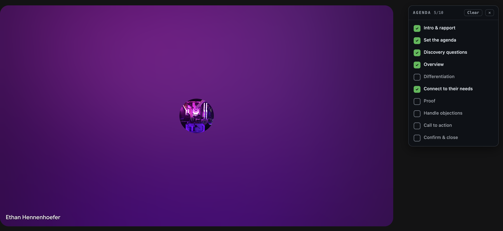
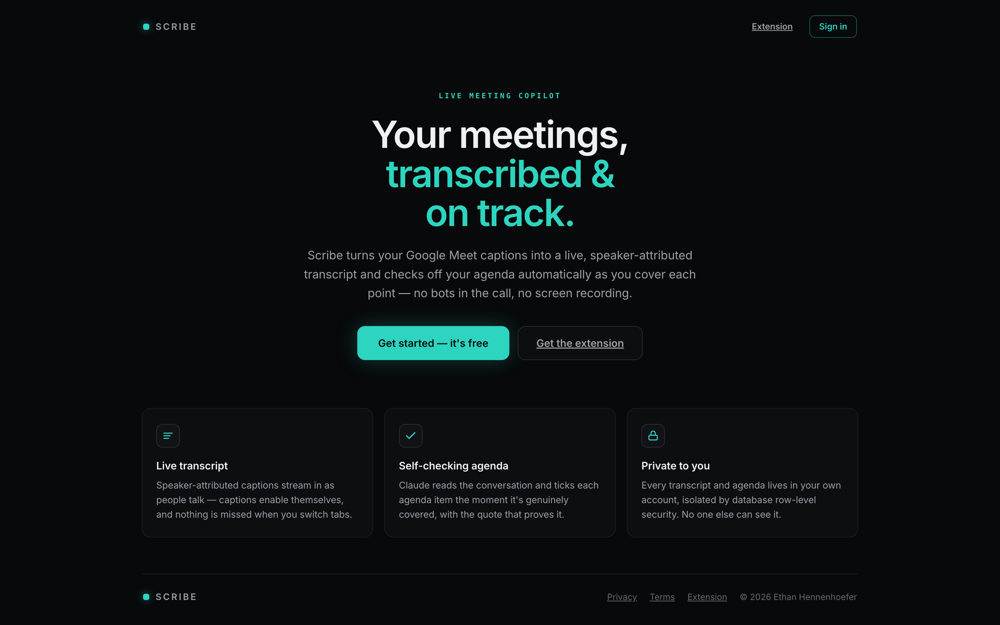
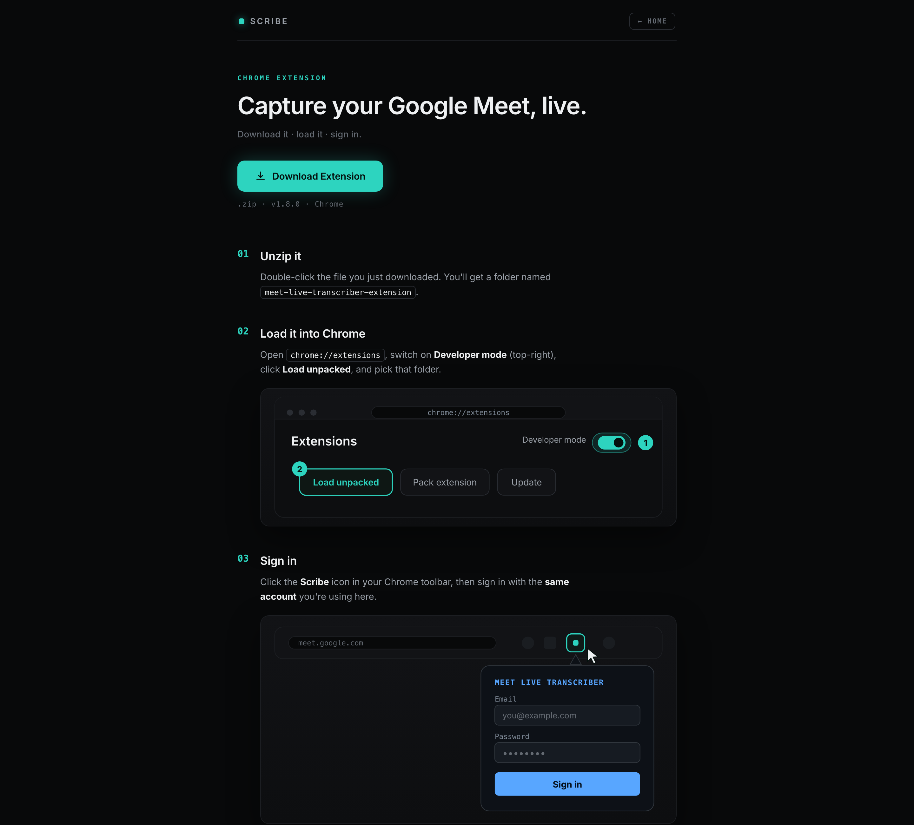
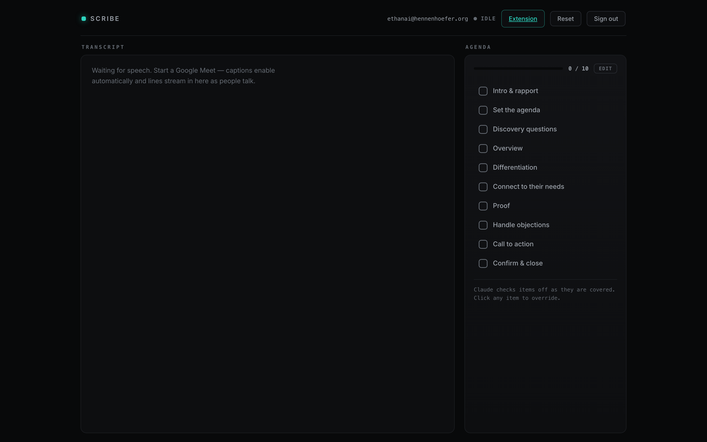

Case study 01
Scribe
Scribe turns Google Meet's built‑in captions into a live, speaker‑attributed transcript, and Claude checks your meeting agenda off in real time with the quote that proves each item was actually covered.

01
The problem
Every meeting‑transcription tool I could find fails at least one of five constraints that matter in real client calls.
- Free. No paid APIs, no per‑minute costs.
- Zero friction for guests. Other participants click the Meet link like normal. They install nothing and sign into nothing.
- Live. Sub‑second, every word, streaming continuously. Not a file that shows up after the call.
- Speaker‑attributed. Who said what, with real names.
- No bot. Nothing visible joins the call. Recorder bots make clients uncomfortable and get meetings off on the wrong foot.
The unlock: Google Meet's caption engine already does free, real‑time, speaker‑labeled speech‑to‑text. A Chrome extension can read that caption text straight out of the Meet page, so the transcription work is already done. Scribe captures it, streams it to the cloud, and builds intelligence on top.
02
The in-Meet sidebar
You don't have to leave the call to see it working. The extension injects a small agenda panel directly into the Google Meet page, so items tick off in the corner of the meeting while you talk. Only the host runs the extension, and everyone else sees a completely normal call.

03
How it works
-
01
Capture
A Manifest V3 content script watches the Meet caption DOM and emits every caption with its speaker name. It survives tab backgrounding via a chrome.alarms heartbeat and self‑heals if Meet redraws the caption container.
-
02
Stream
The extension's service worker signs in to Supabase over plain REST and upserts each caption row. Partial captions and their final version merge into one row, and writes are serialized so a final can never be overtaken by an earlier partial.
-
03
Render
The web app is one dependency‑free vanilla‑JS page. It backfills the transcript with a single query, then subscribes to Supabase Realtime so new lines appear live, color‑coded by speaker, with in‑progress lines dimmed until finalized.
-
04
Think
A Vercel serverless function on a cron sends new transcript lines to Claude, which evaluates them against the agenda. When an item is genuinely covered, it gets checked with a confidence score and a verbatim evidence quote. A cheap anything‑new check keeps API usage near zero.
-
05
Own your data
Every table is scoped by user with Postgres row‑level security, so each account only ever sees its own meetings. Email auth with verification and password reset.
04
Around the product



05
The hard parts
- Picking the approach. I built and rejected a working bot‑based version first (a visible participant kills the vibe), and evaluated four other Google APIs. None were live, free, and invisible at once. Caption capture was the only path that satisfied all five constraints.
- Partial vs. final captions. Meet fires captions incrementally, so each utterance has to upsert into a single row without a stale partial clobbering the final. Solved with a per‑utterance conflict key and serialized writes.
- Race‑proofing auth. Concurrent logins could double‑seed a new user's checklist and token refreshes could stampede. Fixed with single‑flight guards and serialized auth sync.
- Staying alive in a background tab. Chrome throttles timers hard. A chrome.alarms heartbeat plus picture‑in‑picture survival keeps capture running for the whole call.
- Keeping Claude cheap. The eval cron reads only what changed since the last pass and skips the API call entirely when nothing new was said.
What I took away: the best solution came from deleting a working version. The bot build functioned, but it failed the constraint that actually mattered to users, and recognizing that early is what made the final product feel obvious instead of clever.